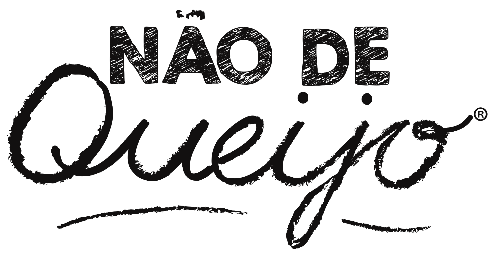

SEÇÃO EM CONSTRUÇÃOUm novo capítulo da Não de Queijo.
Este espaço será dedicado à história e à auditoria da marca, que ajudará a orientar decisões sobre uma possível retomada da operação. Ainda não há anúncio de reabertura ou de retorno das vendas.
A inclusão não pode ter final.